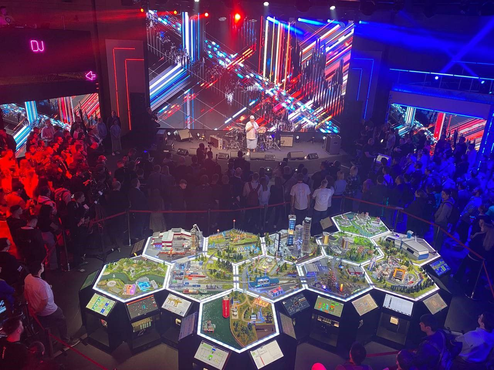

О проекте
Киберполигон - это инновационная образовательная площадка, созданная для практического обучения студентов современным технологиям кибербезопасности через решение реальных задач и участие в CTF-соревнованиях.
Проект включает разработку фронтенда на React и бэкенда на Django, а также создание интерфейсов для работы с системами виртуализации (VirtualBox, KVM) и контейнеризации (Docker).
Практические задания
Реальные сценарии
Командная работа

Цели проекта
Образовательная
Обеспечить студентов практическими навыками в области кибербезопасности через решение реальных задач
Исследовательская
Создать площадку для разработки новых методов защиты от кибератак и анализа уязвимостей
Партнерская
Установить сотрудничество с компаниями в сфере кибербезопасности для работы над реальными проектами
Ожидаемые результаты
- Функционирующий сайт киберполигона
- Виртуальный макет города для тренировок
- Набор учебно-тренировочных заданий
- Обучающие курсы по основам кибербезопасности
- Выделенные помещения под киберполигон
- Современная ИТ-инфраструктура (серверы, сетевое оборудование)
- Партнерские соглашения с IT-компаниями
- Софинансирование развития от индустриальных партнеров